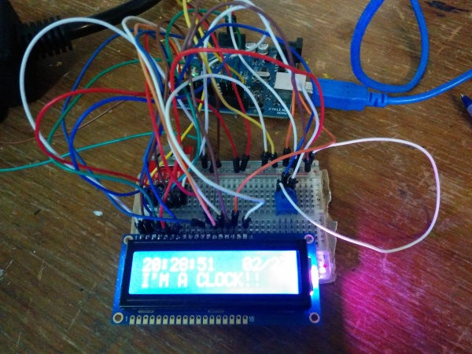
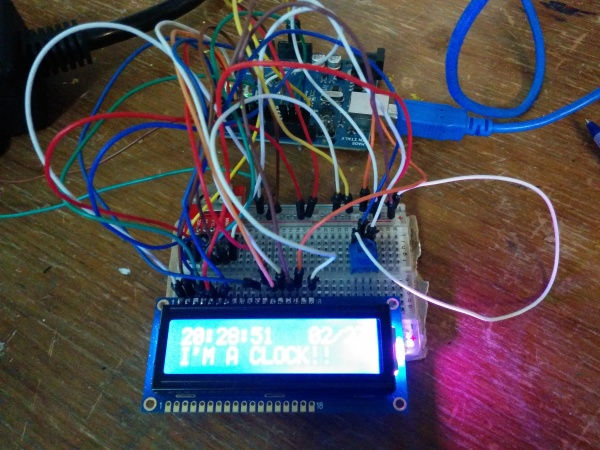
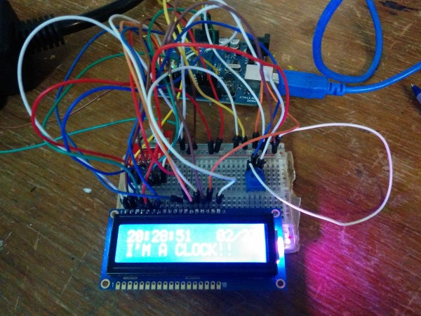

Approximately 2 years ago I ordered an RTC clock module from Sparkfun with the intention of building a clock of some kind.
FINALLY, I've gotten around to hooking everything up! Here's a picture of my amazing setup (if you wiring things for a living, please don't kill me)

The goal is to help my wake up in the morning by turning on a SAD lamp. If you've ever seen one of these faux sunlight lamps before you will wonder why I'm doing this. If you have seen one of these, you'll understand because these things are REALLY FREAKING BRIGHT.
Here's the part list
Getting all these parts together was actually surprisingly difficult. I ordered the RTC, but I didn't order a battery since I thought I could find one locally. I was wrong, so I ordered one online. Don't do that unless you have lots of time to wait. It took like 2 months to ship that tiny coin cell battery across the border to me here in Canada since it has lithium in it.
The RGB LCD was actually part of a kit from Adafruit which is all supposed to be controllable over I2C. I assembled almost all of the kit successfully, but the last piece I put on backwards. And of course, it was the 40pin chip which has proven to be resistant to my efforts to desolder it. sigh. Thankfully I was able to salvage the LCD part.
So the first thing I tried to do was get the the RTC module working. This proved to be quite frustrating. I wired everything up, but I was getting garbage data back from the module. It was counting up (sorta), but random extra bits were getting set and unset. So it would go 0:0:59, 0:1:0, 1:1:1, 0:1:2. WTF. Eventually it turned out that the problem was the way I was grounding the module. I'm not entirely sure what was happening, but eventually I got the right wire connected to the ground on the arduino, bypassing the breadboard.
Everything else was relatively easy to set up. Adafruit has an excellent guide on their LCD Shield. The powerswitch tail is controlled by setting a single pin high or low.
Here's the whole thing below. Most of the code for interacting over SPI to the RTC module is from Sparkfun.
{% gist c2e2afb76edde4905fcc %}
I had some fun messing around with sprinf (it's like printf, but it fills a char array!) You can set the alarm time by modifying the values in the Alarm int array.
For some reason there are 2 garbage characters left on the LCD after the end of my screen. I "fixed" this by just appending more space characters than will fit in a 16 char line.
It would be nice to have multiple alarm